GenImage 配对代表案例 — TruFor / Agent
同一批 10 对、20 张图；TruFor 独立结果与 Agent 结案记录对照。
异常图/可靠性图为编辑版整图；mask 单独展示。
p02_wukong_tag_add
Wukong · add ·
在衣架右侧挂上 SIZE M 价格吊牌
TruFor：原图 score 0.060 → 编辑版 0.206
（Δ +0.146）；mask mean 0.163 →
0.569；编辑版 IoU 0.602，
mask 高响应 0.602。
分类：usable_but_missed。
Agent 原图：whole AI-generated / local
Not tampered / overall Fake，
calls 2，TruFor called True。
Agent 编辑版：whole AI-generated / local
Not tampered / overall Fake，
calls 2，TruFor called True
(0.2061, metric
0.20611)。
结案报告：主要支持：PROBE高分指向AI生成；主要限制：TruFor未发现局部篡改，但不否定AI生成。
trace: sft_data/genimage_local_edits_20261128/analysis/agent/agent/traces/forensic_sft_session_20261128_194841_edited.json
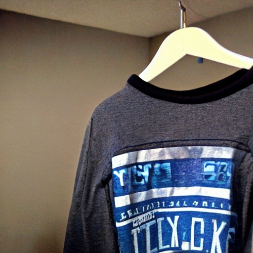
原图
 编辑版
编辑版
 mask（白色为编辑区域）
mask（白色为编辑区域）
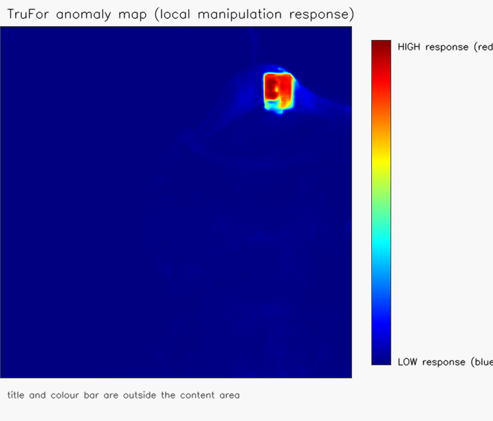
编辑版异常图
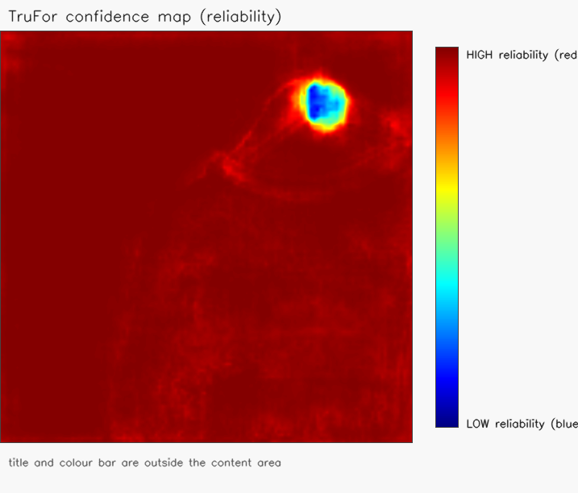
编辑版可靠性图
p01_vqdm_box_label_add
VQDM · add ·
在纸箱正面添加白色 FRAGILE 物流标签
TruFor：原图 score 0.317 → 编辑版 0.095
（Δ -0.222）；mask mean 0.002 →
0.205；编辑版 IoU 0.124，
mask 高响应 0.124。
分类：usable_but_missed。
Agent 原图：whole AI-generated / local
Uncertain / overall Fake，
calls 2，TruFor called True。
Agent 编辑版：whole AI-generated / local
Not tampered / overall Fake，
calls 2，TruFor called True
(0.0949, metric
0.094866)。
结案报告：主要支持：PROBE 高分（0.9963）支持 AI 生成；主要限制：TruFor 低分（0.0949）无强局部响应，不证明未被篡改，但也不支持局部篡改。
trace: sft_data/genimage_local_edits_20261128/analysis/agent/agent/traces/forensic_sft_session_20261128_194733_edited.json
 原图
原图
 编辑版
mask（白色为编辑区域）
编辑版
mask（白色为编辑区域）
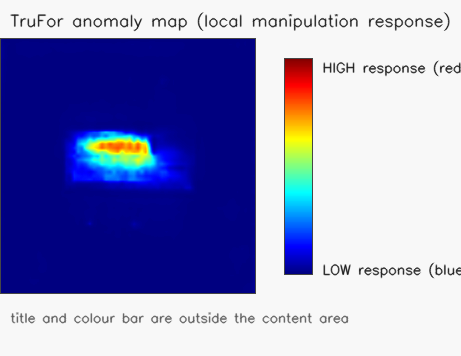
编辑版异常图
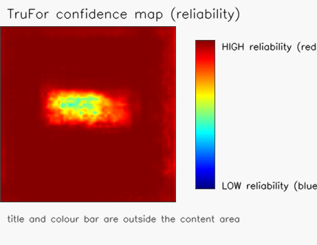
编辑版可靠性图
p05_biggan_stick_delete
BigGAN · delete ·
删除画面中央的细木棍
TruFor：原图 score 0.163 → 编辑版 0.307
（Δ +0.144）；mask mean 0.017 →
0.086；编辑版 IoU 0.000，
mask 高响应 0.000。
分类：trufor_not_localized。
Agent 原图：whole AI-generated / local
Not tampered / overall Fake，
calls 2，TruFor called True。
Agent 编辑版：whole Real / local
Not tampered / overall Real，
calls 2，TruFor called True
(0.3073, metric
0.307271)。
结案报告：PROBE 支持整图为 Real（0.490 < 0.5）；TruFor 支持局部无篡改（0.307 < 0.5）。两者测量不同问题，不能合并成相互验证。主要限制：PROBE 分数处于中间区间，但方向明确为 Real；TruFor 分数未达阈值，仅属候选，但无高响应区域。
trace: sft_data/genimage_local_edits_20261128/analysis/agent/agent/traces/forensic_sft_session_20261128_195258_edited.json
 原图
原图
 编辑版
mask（白色为编辑区域）
编辑版
mask（白色为编辑区域）
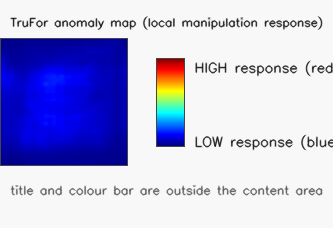
编辑版异常图
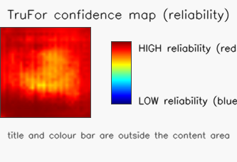
编辑版可靠性图
p07_glide_830_caption_delete
Glide · delete ·
删除页面中部的说明文字块
TruFor：原图 score 0.184 → 编辑版 0.317
（Δ +0.133）；mask mean 0.103 →
0.041；编辑版 IoU 0.000，
mask 高响应 0.000。
分类：trufor_not_localized。
Agent 原图：whole Real / local
Not tampered / overall Real，
calls 2，TruFor called True。
Agent 编辑版：whole Real / local
Not tampered / overall Real，
calls 2，TruFor called True
(0.3174, metric
0.317441)。
结案报告：整图生成判别器得分低（0.25），支持真实图像；局部编辑检测无异常（0.32），支持未篡改。
trace: sft_data/genimage_local_edits_20261128/analysis/agent/agent/traces/forensic_sft_session_20261128_195659_edited.json
 原图
原图
 编辑版
编辑版
 mask（白色为编辑区域）
mask（白色为编辑区域）
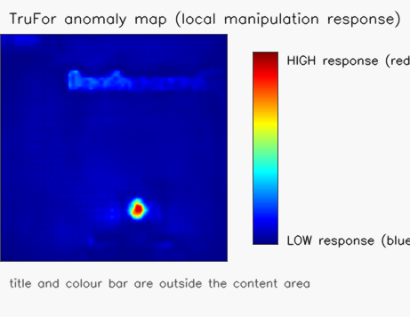
编辑版异常图
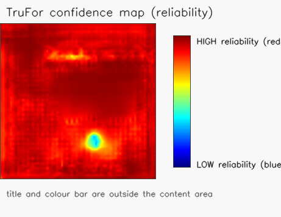
编辑版可靠性图
p03_sd14_sphere_add
SD14 · add ·
把左下空白木纹处补入一颗同图白色球体（含阴影）
TruFor：原图 score 0.436 → 编辑版 0.446
（Δ +0.011）；mask mean 0.000 →
0.133；编辑版 IoU 0.036，
mask 高响应 0.039。
分类：trufor_not_localized。
Agent 原图：whole AI-generated / local
Uncertain / overall Fake，
calls 2，TruFor called True。
Agent 编辑版：whole AI-generated / local
Not tampered / overall Fake，
calls 2，TruFor called True
(0.4465, metric
0.446486)。
结案报告：主要支持：PROBE高分确认AI生成；主要限制：TruFor低分且无高响应区域，局部未被编辑。
trace: sft_data/genimage_local_edits_20261128/analysis/agent/agent/traces/forensic_sft_session_20261128_194959_edited.json
 原图
原图
 编辑版
编辑版
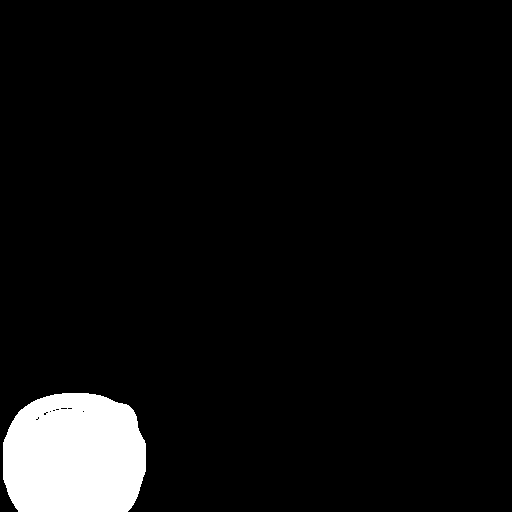
mask（白色为编辑区域）
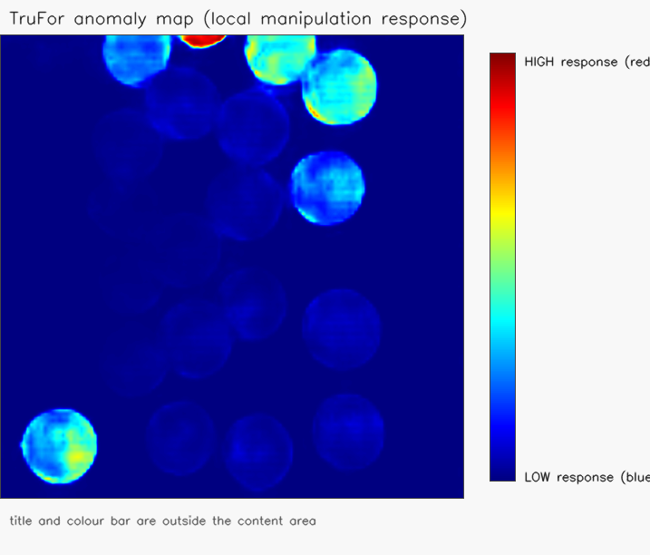
编辑版异常图
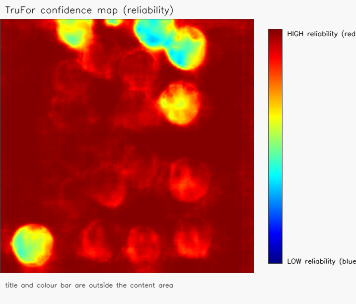
编辑版可靠性图